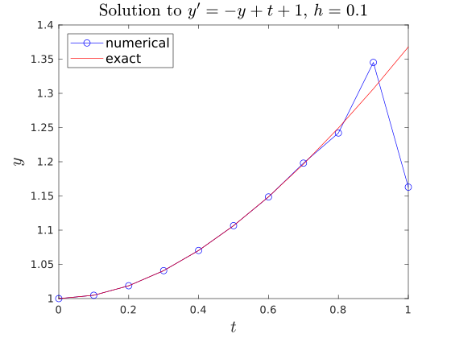
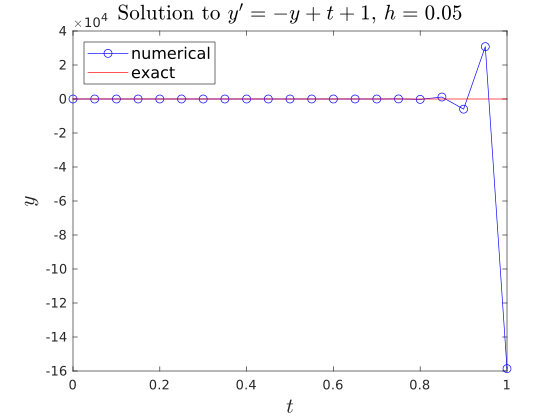

6.1. An exploratory experiment#
Example 6.1
Solve the following initial value problem
\[
y' = -y + t + 1, ~ t\in [0, 1], \quad y(0)=1
\]
by using a 2-step method given as
\[
y_n = -4 y_{n-1} + 5 y_{n-2} + 4 h f_{n-1} + 2h f_{n-2}.
\]
You should
Find the accuracy of the method;
Implement the method in Matlab/Python, and compare the numerical solution with the exact solution
\[y=e^{-t}+t.\]
6.1.1. Accuracy#
We can find the error constant of the method (see Section 5.2). Rearranging the formula as
\[
- 5 y_{n-2} + 4 y_{n-1} + y_n = h \left( 2 f_{n-2} + 4 f_{n-1} + 0 f_n \right),
\]
so
\[
\alpha_0 = -5, ~ \alpha_1 = 4, ~ \alpha_2 = 1, \quad
\beta_0 = 2,~ \beta_1 = 4,~ \beta_2=0.
\]
Using Python to calculate the error constant
import math
from fractions import Fraction
a0=Fraction(-5, 1);
a1=Fraction(4, 1);
a2=Fraction(1, 1);
a3=Fraction(0, 1);
a4=Fraction(0, 1);
b0=Fraction(2, 1);
b1=Fraction(4, 1);
b2=Fraction(0, 1);
b3=Fraction(0, 1);
b4=Fraction(0, 1);
c0= a0+a1+a2+a3+a4;
c1= (a1+2*a2+3*a3+4*a4)-(b0+b1+b2+b3+b4);
c2= (a1+2**2*a2+3**2*a3+4**2*a4)/math.factorial(2)-(b1+2*b2+3*b3+4*b4)/math.factorial(1);
c3= (a1+2**3*a2+3**3*a3+4**3*a4)/math.factorial(3)-(b1+2**2*b2+3**2*b3+4**2*b4)/math.factorial(2);
c4= (a1+2**4*a2+3**4*a3+4**4*a4)/math.factorial(4)-(b1+2**3*b2+3**3*b3+4**3*b4)/math.factorial(3);
c5= (a1+2**5*a2+3**5*a3+4**5*a4)/math.factorial(5)-(b1+2**4*b2+3**4*b3+4**4*b4)/math.factorial(4);
print("c0=",c0)
print("c1=",c1)
print("c2=",c2)
print("c3=",c3)
print("c4=",c4)
print("c5=",c5)
c0= 0
c1= 0
c2= 0
c3= 0
c4= 1/6
c5= 2/15
therefore the order of accuracy of the method is \(3\).
6.1.2. Code Implementation#
\(h=0.1\)
%Scriptfile to solve a single 1st order Ordinary Differential Equation, %using the exact solution to calculate the starting values and % a 2-step method of third-order accuracy % for the remaining integration time span. % function ch5_example1_implement clc clear L=1; nsteps=11; %number of steps, including initial step h=L/(nsteps-1); %steplength h t(1)=0.0; %set starting value of the independent variable t y(1)=1.0; %set initial value of the dependent variable y F(1)=f(t(1),y(1)); %calculate the value of y'=F, at t(1), y(1). for i=2:4 %calculate the first 3 starting values using the exact solution t(i)=t(i-1)+h; %calculate the next step in t y(i)=exp(-t(i))+t(i); %exact solution used for calculating starting values F(i)=f(t(i),y(i)); end for i=5:nsteps %calculate the remaining y values using a 2-step method t(i)=t(i-1)+h; y(i)=-4*y(i-1)+5*y(i-2)+h*(4*F(i-1)+2*F(i-2)); F(i)=f(t(i),y(i)); end disp(' x y F y_ex AbsError'); for i=1:nsteps yex(i)=exp(-t(i))+t(i); abserror(i)=abs(yex(i)-y(i)); fprintf('%4.2f %10.5e %10.5e %10.5e %11.6e\n', t(i),y(i),F(i),yex(i),abserror(i)); end figure(1) plot(t,y,'b-o',t,yex,'r-') xlabel('$t$','Interpreter','latex','FontSize',16) ylabel('$y$','Interpreter','latex','FontSize',16) title("Solution to $y'=-y+t+1$, $h=0.1$",'Interpreter','latex','FontSize',16) legend('numerical','exact','Location','northwest','FontSize',12) % -------------------------------------------------------------------------- % Defining the ODE problem (or function) to be solved function f=f(t,y) f=-y+t+1;
import math import numpy as np import matplotlib.pyplot as plt def f(t,y): return -y+t+1; #interval of definition L=1.0; nsteps=11; h=L/(nsteps-1); #declare arrays t=np.zeros(nsteps); y=np.zeros(nsteps); F=np.zeros(nsteps); yex=np.zeros(nsteps); abserror=np.zeros(nsteps); #initial values t[0]=0.0; y[0]=1.0; F[0]=f(t[0],y[0]); #calculate the first 3 starting values using the exact solution for i in range(1,4): t[i]=t[i-1]+h; y[i]=math.exp(-t[i])+t[i]; F[i]=f(t[i],y[i]); #use multiple-step method to calculate y for i in range(4,nsteps): y[i]=-4*y[i-1]+5*y[i-2]+h*(4*F[i-1]+2*F[i-2]); t[i]=t[i-1]+h; F[i]=f(t[i],y[i]); #screen output print(" t y F y_ex AbsError"); for i in range(nsteps): yex[i]=math.exp(-t[i])+t[i]; abserror[i]=abs(yex[i]-y[i]); print("%4.2f %11.5e %11.5e %11.5e %11.5e" %(t[i],y[i],F[i],yex[i],abserror[i])) #plot solution plt.figure(1) plt.plot(t,y,'r-o',label="numerical") plt.plot(t,yex,'b-',label="exact") plt.xlabel('$t$', fontsize=20) plt.ylabel('$y$', fontsize=20) plt.legend(loc="upper left", fontsize=14) plt.title("Solution to $y'=-y+t+1, y(0)=1, h=0.1$",fontsize=16) plt.yticks(fontsize=14) plt.xticks(fontsize=14) plt.show()
Output:
x y F y_ex AbsError 0.00 1.00000e+00 0.00000e+00 1.00000e+00 0.000000e+00 0.10 1.00484e+00 9.51626e-02 1.00484e+00 0.000000e+00 0.20 1.01873e+00 1.81269e-01 1.01873e+00 0.000000e+00 0.30 1.04082e+00 2.59182e-01 1.04082e+00 0.000000e+00 0.40 1.07031e+00 3.29693e-01 1.07032e+00 1.260226e-05 0.50 1.10657e+00 3.93425e-01 1.10653e+00 4.404695e-05 0.60 1.14855e+00 4.51453e-01 1.14881e+00 2.646153e-04 0.70 1.19795e+00 5.02048e-01 1.19659e+00 1.366397e-03 0.80 1.24204e+00 5.57962e-01 1.24933e+00 7.290746e-03 0.90 1.34520e+00 5.54800e-01 1.30657e+00 3.863034e-02 1.00 1.16290e+00 8.37097e-01 1.36788e+00 2.049760e-01
\(h=0.05\)
Output:
x y F y_ex AbsError 0.00 1.00000e+00 0.00000e+00 1.00000e+00 0.000000e+00 0.05 1.00123e+00 4.87706e-02 1.00123e+00 0.000000e+00 0.10 1.00484e+00 9.51626e-02 1.00484e+00 0.000000e+00 0.15 1.01071e+00 1.39292e-01 1.01071e+00 0.000000e+00 0.20 1.01873e+00 1.81270e-01 1.01873e+00 9.056870e-07 0.25 1.02880e+00 2.21196e-01 1.02880e+00 2.942369e-06 0.30 1.04080e+00 2.59199e-01 1.04082e+00 1.761532e-05 0.35 1.05478e+00 2.95224e-01 1.05469e+00 8.762241e-05 0.40 1.06986e+00 3.30135e-01 1.07032e+00 4.550707e-04 0.45 1.08997e+00 3.60032e-01 1.08763e+00 2.339941e-03 0.50 1.09447e+00 4.05528e-01 1.10653e+00 1.205827e-02 0.55 1.18906e+00 3.60940e-01 1.12695e+00 6.210981e-02 0.60 8.28864e-01 7.71136e-01 1.14881e+00 3.199473e-01 0.65 2.82016e+00 -1.17016e+00 1.17205e+00 1.648116e+00 0.70 -7.29325e+00 8.99325e+00 1.19659e+00 8.489831e+00 0.75 4.49554e+01 -4.32054e+01 1.22237e+00 4.373306e+01 0.80 -2.24030e+02 2.25830e+02 1.24933e+00 2.252790e+02 0.85 1.16174e+03 -1.15989e+03 1.27741e+00 1.160464e+03 0.90 -5.97651e+03 5.97841e+03 1.30657e+00 5.977816e+03 0.95 3.07944e+04 -3.07925e+04 1.33674e+00 3.079310e+04 1.00 -1.58621e+05 1.58623e+05 1.36788e+00 1.586223e+05
Question
The 2-step looks so good, its order of accuracy is \(3\). But why it produces such significant errors in the results?